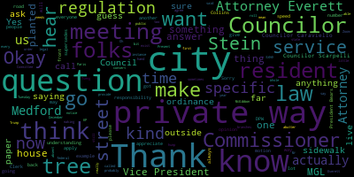
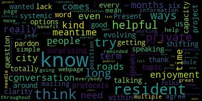
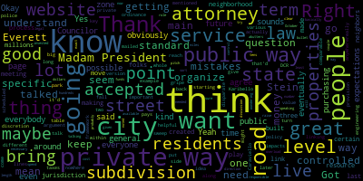
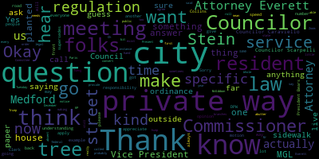
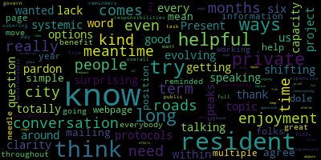
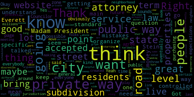

total time: 10.25 minutes
total words: 1851

{kind=link}
total time: 2.05 minutes
total words: 390

{kind=link}
total time: 5.76 minutes
total words: 1180

{kind=link}
total time: 3.42 minutes
total words: 660

total time: 1.39 minutes
total words: 220

[Morell]: 23-314, Committee of the Whole, meeting Tuesday, December 5th, 2023. It's called to order. Mr. Clerk, please call the roll.
[Hurtubise]: Vice President Bears. Councilor Caraviello. I see Councilor Caraviello muted. I'm going to modify my mark as present so I can see him. Councilor Collins.
[Collins]: Present.
[Hurtubise]: Councilor Knight. Absent. Councilor Scarpelli. Councilor Scarpelli appears to be absent. Councilor Tseng President Morell.
[Morell]: Present. 5 present, 2 absent, and the meeting is called to order. There will be a meeting of the Medford City Council Committee of the Whole on Tuesday, December 5, 2023 at 6 p.m. in the Medford City Council Chamber on the second floor of Medford City Hall via Zoom. The purpose of this meeting is to discuss Paper 23-314, Private Ways in the City of Medford. The City Council has invited DPW Commissioner Tim McGibbon and Attorneys Robin Stein and Sharon Everett of KP Law to attend this meeting. For further information, aids, and accommodations, contact the City Clerk at 781-393-2425. Sincerely yours, Nicole Morell, Council President. So as the meeting notice states, this is actually from a paper from Councilor Scarpelli. We've had a number of these papers over the years, honestly, usually multiple during the year, regarding questions that residents will have as far as services on private ways, some of it stemming from impetus as far as in saying they used to have a certain service on their private way, they no longer have it, or understanding why they don't have a service, things like that. We have had some subcommittee meetings on this where we've had Commissioner McGivern explain a lot of the role that the DPW takes on, but much of this actually enters the legal area as far as what is allowed under Massachusetts general law for practices on private ways. So as such, We have attorneys Everett and Stein from KP Law with us tonight. I know we have a number of questions. I will do my best to address Councilor Scarpelli's questions from my memory as we're here. And then, so we'll just kick things off.
[Hurtubise]: Okay.
[Morell]: Attorney Everett or Stein, can you hear us? Yes. Okay. Attorney Everett can hear us at least, so. Before, I know I have a number of questions if counselors have any questions that they would like to ask. Vice President Bears.
[Bears]: Thank you, Madam President. I just think it might be helpful, I know this is kind of more for specific questions, but if possible, if Attorneys Everett and or Stein could give a general framework of what state law is around private ways and how that impacts the city. I think that would be a good starting point just to understand maybe what we can do, what we can't do, and then what is more within our discretion as a city by policy or ordinance.
[Morell]: Thank you, Vice President Paris. Attorney Stein, Attorney Everett, is that something you would be able to provide?
[Everett]: Robin, do you want me to do it?
[Stein]: Why don't you start and I can, you know, maybe from the real estate perspective more. If there's land use issues, I'll jump in.
[Everett]: Okay. So good evening. Thank you for having us at your meeting tonight. The most important thing to know about private ways is that the city has very limited powers as to what it can do. There are a few things that the that the city made due, and I'm going to go over the general laws respecting those provisions. So the city has the authority to appropriate public funds for the removal of snow and ice from private lanes. I reviewed your file, the ordinances, and I see that that has not been accepted by the city, but if the city wanted to, it could accept the provisions of Chapter 14, Section 6C, which requires a valid question for which public funds may be used to allow private ways. The city council and the mayor have a lot of discretion in deciding which private ways to be allowed. There's also a statute, which is Chapter 40, Section 6N, which allows public funds to be appropriated to make temporary repairs to private ways. that that provision is one could act on that provided there's an ordinance on that. And I see that the city does have some provisions with respect to temporary repairs to private buildings. So the city has flexibility in setting those standards and I see that the city has set some standards such as the way it must be open to the public for a period of five years And it sets forth all the temporary repairs that can be made, what's included and what's excluded. Section, Chapter 85, Section 6 allows the city to have a bylaw requiring sidewalks to be plowed by abutters. I don't believe that that has been adopted, but that's a possible statutory provision regarding private ways. And the other authority of the city regarding private ways comes through its authority under Chapter 14, Section 22, to adopt ordinances respecting various things. So as a general matter, the city is responsible for private ways and for order and traffic. And therefore, there are traffic regulations that the city can adopt with respect to private ways. It can also do that with respect to private ways if the city is requested by the owners of the private way. So you might get a request from a particular butter, but the statute requires that you get the consent of all the butters in order to regulate traffic in public or private ways, such as parking, speed limits, and other things. You can also prohibit parking in front of a residence if the person is not a resident. There are various regulations that the city could use on private ways. The city can prohibit and regulate cars and vehicles that may be left with private ways that interfere with snow and ice. It can require vehicles to be moved for snow removal purposes. And it has noise restrictions that it can impose, such as horns and vehicles having excessive noise. So those are all within the ambit of the city. The city could also regulate speed, as I said, on private base, provided that the cities are requested. And under the provisions of Chapter 260, Section 120D, anybody trying to tow a vehicle from a private way, there are certain standards that that person must meet in order to tow vehicles from a public way, most of which include prior notice to the police chief. Robin, do you want to add anything?
[Stein]: No, I mean, I think Shirin pretty much summed it up. The city has limited but some ability to regulate private ways. And I think if you have specific questions, we probably can give more direct answers.
[Morell]: Thank you. One question I had I actually got from a resident. So you talked about, I think, the ability of all I think you said, it has to be every abutter on a private way has to agree. Could residents on a private way, I'm not an abutter, but residents, could residents on a private way, if everyone on the street agreed, could they put like a speed hump on their road? Or does that exist in some other plane of regulation?
[Everett]: I'm sorry, I could not hear anything.
[Morell]: Sorry, can you hear me now? Okay. No, they can't hear us, Kevin. It's just faint. Can you hear me now?
[Stein]: That's better.
[Morell]: OK, so could I had a question from a resident that asked if they got everyone on their private way to agree, could they actually install a speed hump on their private way or does that exist under some other regulation?
[Stein]: Sharon, the question is, if all the residents on the street agree, can they put a speed bump on a private way?
[Everett]: Yes, you could do that. And private ways are controlled generally by the abutters. Private ways, as a general rule, it's owned by all the abutters that they own to the center line. And the abutters to a private way have responsibility and control of private ways. So they could, for example, put in gates. And if they wanted to put in speed bumps, they could do that. Now, if the city has some traffic regulations that require it to be informed first, they could do that. But in my opinion, if they have control of private ways, they could put in speed bumps and reasonable traffic devices to control traffic and speed.
[Stein]: And the only caveat that I would add to that is, you know, if it was a way that was developed through a subdivision approval, we may want to go back and look at what was approved by the planning board. Because if the speed bump was not part of the road improvement that was approved, they might need to come in and request a modification. So it would depend on maybe how old the private way is, we'd have to look at it.
[Morell]: Okay. Thank you. And not that anyone is asking this. So just making sure I'm understanding that kind of the way that, you know, every level up from the city is what Trump's like MGL, Trump, you know, you follow MGL and then city law and federal kind of that thing. We can't, people couldn't suddenly say, we want our private way to have a 55 mile per hour speed limit. And that, you know, just making sure that the city regulations apply first. And then if folks want to work within that city regulation to make some changes to their street, they can. or city ordinances apply first? I'm just saying, so I guess another way to phrase it is like, we can't make an ordinance in Medford that supersedes or goes, supersedes MGL. And MGL can't make a, you know, the state house can't pass a law that supersedes federal law. So I'm just saying that the- Yeah, so private way folks can't make some law that is outside of or some regulation that is outside of city ordinances. All city ordinances still apply.
[Everett]: That's correct.
[Morell]: Thank you. So I think actually a lot of the questions we get are related to services. So I think regulation, I think that makes sense. I think where folks get confused, understandably so, is you know, they're told they have a, they know they live on a private way and outside of the fact that we all pay the same taxes regardless of what type of street we live on, they get some city services. So the street may be plowed or there may be, you know, if sometimes when branches fall into the road, like large branches, they may be picked up, things like that. If folks request a stop sign, it gets installed. So where's the line there as far as services that cities with private ways can or do provide and then ones that would be going outside and would be deemed using public funds for private goods?
[Everett]: Well, according to your ordinances, you may use public funds to make temporary repairs to private ways. So, for example, if there are trees falling, you could remove that, you know, because it's a safety hazard. If there is a drainage issue, you could do drainage repairs to private ways. So under your ordinances, there are certain criteria that have to be satisfied before the city can consider whether to provide these repairs and services to private ways. So such repairs are determined by the mayor based on recommendations from the DPW director, and it sets forth the various kinds of repairs that could be made.
[Morell]: Okay, and could you, you were hard to hear a little bit before, could you repeat back the section of MGL that was adopted, opted into for that?
[Everett]: Well, you can make temporary repairs under the provisions of chapter 40, section 6N. And the city has adopted ordinance pursuant to that statute to allow for temporary repairs. But you could not, for example, make permanent repairs, because that would be outside the scope of the statute. So if somebody's looking for a full payment to the private way, then that would be arguably outside the scope of that authority.
[Morell]: So an example for that, I have a very specific example, is that on a private way, it just has a catchment basin that, because of increased rain events, it's just overflowing. there wouldn't be really anything that the city could do to fix that, because that needs a complete overhaul. It needs to be likely tied into the city sewer to avoid that problem. And that would not be considered a temporary repair. That would be a permanent.
[Everett]: That would be correct.
[Morell]: Thank you. I'm going to go to Commissioner Gabert.
[McGivern]: I was just going to add, from a standpoint of the DPW, we do things in the interest of public safety. There's when a limb falls down in a road that we're not doing that to maintain the tree, we're doing it to maintain public safety. And we also do things like plow the private ways, even though we haven't adopted that section of law, we do do that in the interest of public safety for emergency vehicles. We do things like fill potholes without charging the residents 50% or whatever the ordinance says in the interest of public safety and making sure that vehicles can get to the buildings on private ways. So we do do things like that. And I will say that some of these provisions, as the attorneys are mentioning, the city has to adopt, which is one of the maintenance ones, and anything that is a public safety route address. So your example of a drainage issue, that could be an issue of public safety. And we may go out and respond to that if it's creating an issue, regardless of the specifics of what we are allowed to do or not. But we'll do it almost like it's an emergency. If a fire truck needs to get through, we're not going to just leave a giant puddle there, to put it simply.
[Morell]: Thank you. I believe Councilor Scarpelli is on the call now. Councilor Scarpelli, I know you had requested this meeting. If you have specific questions that you wanted to ask. I'll give her a beat, assuming that's him. One question, again, a specific instance that we've had A lot of, I live on a private way, I have no idea why it's a private way or where the papers are, you know, I don't get anything like, I did not get anything like that when I, you know, I bought my house. But folks have said, folks who have been in their home for a really long time, we had a specific example of someone saying that the city donated a tree, they planted a tree in front of my house on a private way before I was the owner of the house, I didn't ask for this tree, and now it's damaging the sidewalk in front of the house. So since the city planted the tree, isn't this the city's responsibility? So what is the legal opinion on something like that? It happens a few. It's happened more than once.
[Everett]: Well, the city usually has no responsibility for trees within private ways. If there is proof that the city and the tree is now impairing the sidewalks and damaging the sidewalks, the city could, under the repair statute, make some repairs to the sidewalks. I'm not sure the extent of the city's liability if the tree is not impairing traffic or causing an obstruction. If the sidewalk is a danger to pedestrians, then I think the city, it would behoove the city to repair those sidewalks. But just generally, I think you'll have to establish that the tree was in fact planted by the city.
[Morell]: Okay, thank you. I'll go to Councilor Caraviello.
[Caraviello]: Thank you, Madam President. You know, we talked about the trees, just about every tree that's been planted on a private way has been planted by the city. There's no residents that plant trees and, you know, get them that big. I mean, I've lived on a private way for 45 years and, you know, I get, you know, the same service as everybody else. And now all of a sudden, you know, we don't, we have a problem with the trees and small things. So let's say these residents, pay the same amount of taxes that everybody else pays, and they're entitled to the exact same services that everybody else gets. We shouldn't be picking and choosing who gets services and who doesn't. I don't know why I live in a private way. It was like you like yourself, Madam President. It was this is what I was what I moved into 45 years ago. And let's say that it's it's all part of the same city of Medford, one city, not not little sections and say, say, private ways, pay the same taxes, and they should get the same services.
[Morell]: Thank you, Councilor Caraviello. Um, attorney ever signed in your opinion, I mean, should there be I know we just got a few new street trees planted on my private way. Big fan. But I mean, in your opinion, should there be something that folks are given notice or something now that this tree is on their private way? it becomes their responsibility.
[Caraviello]: That's fine. If that's, you know, going forward, if that's the case, we want what we want to do, then we should do it. But, you know, I would probably guarantee that everyone that lives in on a private way, they didn't plant those trees. I say if that if that's what if that's going to be the policy going forward, then the residents should be made aware that we're putting a tree in front of the ocean. You want it.
[Morell]: I guess that as a question to Attorney Everett or Stein, is that something that would behoove the city to do. And Commissioner Ray, I don't know if you have anything to add. You know what? Oh, sorry. I'll just go to Commissioner McGibbon just from the DP. Sorry.
[McGivern]: Oh, sorry. Yeah, I'll be quick. I apologize. There are subdivisions that are built, and one recently, I think it's Macklin Road up in the Heights. The developer installs the trees or plants trees as part of the subdivision process. So when there's private ways and there's old trees on them, It's likely that the original developer that did the subdivision planted some trees. So it's not all city planted trees. So anyway, that's what I had to add.
[Morell]: Thank you. I'll go back to you, Attorney Everett.
[Everett]: So as I mentioned, the city has responsibility for trees within the layout of public ways. The public laws do not give the city authority over trees in private ways. And I would expect that if this were, you know, brought to a court, it would be held that the abutters to private ways where such trees are located are responsible for the maintenance of those trees.
[Morell]: Thank you. I was going to ask Commissioner McGovern, I guess, so in those instances, what does the official kind of DPW stand say? I'm on a private way. We don't know who planted the tree. We think it was a city, we have a story that it was a city, and now it's bringing up my sidewalk. How does the DW approach that?
[McGivern]: So, you know, we've been taking these situations case by case. And we always say that regardless of who planted the tree, trees run with the land. There's a very specific definition of what a public shade tree is. and what the city's jurisdiction is on trees. So just like if you go to your friend's house and plant a tree in their yard, that tree becomes a part of the yard, and it now is your friend's tree. You can't come back later on and say, well, that's my tree. I planted it there. So there's that. That's important to think about. When you buy a piece of property, unless there's something written specifically in the agreement of the sale, the trees and the rocks and the dirt come with it. With that said, if we are aware that prior to me being the commissioner, our practices were different, as Councilor Caraviello is alluding to. Obviously, I have set things in a path that I believe is more in accordance with mass general law. And one of the things that we're challenged with in the DPW is addressing those types of issues. They'll probably be around for a little while until we fully get on to the side of the law. So case by case, if we planted it within the last few years and it's causing a problem, we will help out the owner of the tree, acknowledging that we planted it, but at the same time, making sure that they acknowledge that the city doesn't have care and control of the tree. If it's lifting the sidewalk panel, yes, we may repair the sidewalk panel. If it's growing into the road and obstructing traffic or it's It's got a limb that's about to fall into the road, things like that. Instead of asking the owner to prune it and take care of it, if we know we planted it, we may do that pruning. We try to get permission from the owner when we do that. It's a bit of an education process, and I think tonight is part of that education process. There's many categories of this. I know the chief of police has taken on the parking question and what can be done as far as parking in private ways. So we're tackling that as a city as well.
[Morell]: Thank you. Any other questions from councillors at this time? I did see Councilor Favelli is unfortunately unable to join us, but I do think we're covering the bulk of the kind of the recurring questions we do get. Another question, oh, go to Councilor Kerrio.
[Caraviello]: Thank you, Madam President. Madam President, if this is the course we're going to take, I think that the city should be sending a notice to everybody that lives on the private way, notifying them of the changes that are going to be happening going forward. Like I said, I don't think most people even know we're having this meeting, but if we're going to start enforcing ordinances and changing ordinances for tonight, the residents on these private ways should be notified what they're responsible and what they're not responsible for. Because as I say, many of them have lived there 40, 50, 60, 70 years. And just assume they lived on the street, they say, you know, that a private way got the same things that everyone else got. So they should be made aware of this.
[Morell]: Thank you for sure, Gabriel.
[McGivern]: I was going to say the city has started this process. There's been public meetings regarding parking. We're actually looking at making a webpage that's an informational webpage for residents similar to what Boston has. If you go to Boston's website, it has a very good breakdown of what private way owners and public way city is responsible for and it lists it out in a pretty simple manner so we are headed in that direction and there is more information to come but this is a part of it the public meetings that the chief of police and engineering had are part of it, and the information that is going out to the residents, the DPW is a part of it. So I know we'll just continue and, you know, any sort of recommendations on that communication and education campaign are welcome.
[Morell]: Thank you. Vice President Bears.
[Bears]: Thank you, Madam President. I had two questions. One was along those lines. So it sounds like we're going to have a website where people can go, if I live on a private way, here's the law. This is what the city does. This is what the city doesn't do. Those are the expectations I should have for service provision on a private way.
[McGivern]: That's the idea, yeah. I've had discussions with the mayor about that. I'm in brainstorming sessions and trying to figure out the best way to do this. I've shared some examples, like Boston, for example. And anybody can go look at that. It would be similar to that.
[Bears]: I think that'd be great. I think it'd be great to put links to the different various meetings that you mentioned. I know police have had some engineering. We've had a few. I think linking out those would be great on that website. To Councilor Karibello's point, would maybe a one-page version of that eventually be mailed out to all the private residents that we have, that we know of? I think we can keep it on the table and talk about it.
[McGivern]: It's a lot of mailers, but it can be on the table, I believe, obviously beyond my capacity to make that decision. But it's something to talk about.
[Bears]: Okay, good. Yeah, I think that would be, I do agree that that would be good. I mean, you know, it's not going to reach everybody even. if we do that. But I think there's some value there.
[McGivern]: Sure. And it could reference a website which is more permanent.
[Bears]: Right.
[McGivern]: Exactly. And lands in the recycling bin. Then it can be shared that way. Right. Especially to real estate agents who are selling homes.
[Bears]: Yes. And I think that's really the key thing. Right. It's what are the expectations of the people. who are purchasing properties. I mean, obviously you have people who live on the properties as Councilor Kerrio said for a very long time. And that's one thing, but as properties turn over, I think it's important for residents or future residents who are purchasing those properties to understand that you're not getting the same level of service that you're getting on a public way. And I understand the argument, everyone pays the same taxes, everyone should get the same thing. I live on a state road, right? There's a lot of state roads in the city where we don't get the same level of service or comparable services as people on city roads. I actually have a specific gripe about big sweep that I'm going to come to you with later, which is. My zone and the DCR zone keep getting scheduled at the same time in the fall, so there's nowhere to park anywhere.
[McGivern]: We can fix that.
[Bears]: And it's not just for me, but for the whole neighborhood, because I know the main idea of it is we don't do the main roads, we're doing the side roads, so people can move to the main roads and then move back. But I think that's just a great example of there are disparate levels of service because of who has jurisdiction over certain ways. And there's basically three levels of jurisdiction. There's a lot of city-controlled public ways. There are state-controlled public ways. And then there are private ways, which are, as our attorneys have noted, controlled by the abutters of those ways, the people who live on those ways.
[McGivern]: Correct. Just some important points. So the title owners to private ways don't pay taxes on those ways. So that's important. But they pay taxes on their building lot parcel, obviously. Also, the taxes that go towards the network of public ways. is the same network of public ways that we all share. So we're all paying taxes on the network of public ways. That's an important point to remember, too, because we don't spend equally on all of our public ways. We don't spend equally on the smaller public ways as opposed to an arterial. So the argument of unfair services needs to be looked at through the lens of our network of public ways. Also, there are advantages to living on a private way. And that's why sort of a process exists to either have the city, either the city takes the land or the private ways, you know, donate the land to become a public way, once it meets standards and things like that. So there's a process all laid out for that if residents are interested in public way acceptance for their private way. So I just wanted to make sure that those points are put out there and understood.
[Morell]: Thank you. Commissioner Gibran, in that same thought, This might be a city engineer question, but I guess it's kind of all the same. Has the city identified any streets that they would want to convert to public ways, or is it the position of the city that they're only looking at resident-driven desire to convert, understanding it's costly and involved?
[McGivern]: Sure, both paths exist. And right now, we don't have a large appetite or capacity to do the city-driven approach with taking land, providing betterments, and doing that whole thing. It's pretty human resources intensive. So basically, right now, our engineering division focusing all hands on deck basically on water systems and pavements and sidewalk systems for the public ways. So our public ways are in a state where our engineering resources need to be, and public money resources need to be really focused on that. There could very well be a time in the future, just like there was a time in the past, where the city identifies private ways that have a high public good. I'm thinking of one right now, Fulton Spring Road, that sees a lot of traffic from Fells Way up to Fulton Street. It would be nice if it was public. So that could be a public road in the future if the city had the resources and the time to identify it, provide betterments, provide the taxes to the residents because they would have to pay for it either through taxes or with the, you know, the betterments to make it up to city standards. So, you know, that's important to remember, too. This isn't a, it's not a free process, but it does exist for either the city to lead the charge and make it a public way, or the title owners of the private way to lead the charge and make it a public way. It can happen either way.
[Morell]: Thank you. And just to kind of go a little bit down that path, again, not that there's any specific plans, but thinking, again, I live in a private way, so Sometimes I'd assume that to make those betterments, like we have a very narrow sidewalk. I would think the sidewalk would have to be up to ADA standards. And would that be, it would involve some, you know, some taking of like front lawns or, or widening the road or things like that.
[McGivern]: Potentially, potentially. I mean, it depends. Like, so we have standards for width of right of way. We have standards for the cross section of a sidewalk, the width of a sidewalk, how crossings happen, the pedestrian ramps. the depth of the pavement, the depth of the utilities that we install, the materials that all those things are made out of, that even things as steepness of the road, sight lines, all of the things to go from a private way that just basically provides access to homes to a public way that is in the care and control of the public.
[Morell]: Thank you. Councilor Kerrio, did you have another question or is your hand still up?
[Caraviello]: Yes, yes, I did. So Tim, you mentioned the advantages of living in a private way. I don't know what they are.
[McGivern]: Well, I mean, as you've stated before, Councilor Kerriolo, some of them are outdated, but there are individuals who live on a private way and they don't want the city to provide betterments, make a sidewalk. They want to own the tree that's in front of their house on the, you know, in the right-of-way parcel. So there are advantages to it. If you are living on a private way, there's, advantages, I suppose, to owning the objects that are in the private way, the road, the sidewalk. Some people like that sort of stuff. I was involved when I was city engineer on a road where a resident told us to go away because they didn't want us to fix potholes because it's a private way. It was their road. And our response was, well, we're fixing the potholes because we need fire trucks to be able to get down the street. It goes both ways. I've heard both sides. There's less people in favor of private ways today than decades ago, but they're still out there.
[Caraviello]: Well, like I say, I didn't choose to live in a private way. When I bought my house, that was what it was. But 40 years ago, I also had to pay to pave my street. So you should maybe bring back that program where the residents paid half and the city paid half for some of these private ways like they did in prior years. Is that an option that we're looking at?
[McGivern]: The ordinance is still there, but I've recommended, and I will recommend it to this body too, at this time, with the limited amount of funding we get for roadways, I believe it's in my obligation to direct those funds towards the publicly accepted ways that are in the care and control of the city, and not ways that are under a different, you know, a different title holder, I think, or a different owner. I think that it is the right thing to do when it comes to public money and how we spend public money. These are very expensive things we're talking about. So we are obligated, as the city, to distribute the funds to the public waste, to repair public waste. If there is a time in the future where we have extra money to spend on rebuilding roads, then I would definitely be in favor of that 50-50 program that we have. And again, those would only be temporary repairs. Something like a mill and overlay would be about as far as we could go. Because again, there are limitations when it comes to what we can and can't do in a private way. And we can't just go spend a whole bunch of public money building new roads and sidewalks in a private way unless we are planning on following the process to then take that land and uh get it accepted uh by the city council and the under the recommendation of the planning board.
[Caraviello]: I mean uh when I did my street some years ago that's all we did they did a mill and overlay they didn't uh you know they didn't put any sidewalks in uh but like I say you know now it's 40 years later and the road is you know is in my road is in need of repairs also but you know you talked about notifying the people uh all you got to do is uh put a letter in their tax bill That's the easiest way to make sure they get it, because they have to pay their taxes somewhere along, so they gotta open that up. And that's, again, we keep talking about people going on websites. A lot of people don't go on websites. Remember that. So hey, putting the letter in the tax bill is the easiest way to do it, and you'll know everybody got it.
[Morell]: Thank you. Vice President Paris.
[Bears]: Thank you, Madam President. Just in terms of the cost, I just, you know, since we talked about this last October, I want to just bring it up. I think we're talking at least a couple miles of private ways in terms of length, but I think the number that we talked about was if not tens of millions, hundreds of millions of dollars would be needed to bring all the private ways up to the state necessary to be accepted by the public.
[McGivern]: Yeah, all the private ways, we're talking definitely in the hundreds of millions. Hundreds of millions, yeah. Oh, yeah. If we're talking one or two, yeah, in the single digit millions, maybe if we're talking a couple of streets. Sure. Yeah, that's what I mean. These are big dollar figures that we're talking about. So it's important that as a steward of public money, myself, that that money is used in the things that we are obligated to spend public money on. And we are certainly not obligated to spend money on private ways. That type of money.
[Bears]: You know, I think, too, in terms of things that could maybe go and I don't want to overload now this website that, you know, will eventually be created this page on the website. But I think also some sort of link to this is how you can organize your neighbors to try to bring your street up to the level, you know, if they want to spend the money so that they don't have to be responsible for it in the future, it seems like that may be the direction that maybe some folks are going. I don't know if you'd ever get everybody on the street to agree, but it does seem like, given all of the discussion around this, that it could be possible for residents to organize themselves and pitch in the money to bring streets up to the standard to be accepted. And then once we accepted them, then they would be public ways and then they would be streets that would be invested in by with public money. But I think that that kind of. resource, just making sure that resource is available would be good.
[McGivern]: Yeah, I think there's limited information that we could give there. It would really be up to the organization of the residents, however they decide to organize themselves into an entity, how they're going to get the funds together to do the work, they probably need an attorney, things like that. So there's a lot of nuances and details that would need to be covered there.
[Bears]: But even just those three bullet points that you just said, right? If you want to do this, you're going to need to organize your neighbors. You're going to probably need an attorney. You're going to need to raise funds. I think just making it clear what the process is, if folks ever want to go down that road.
[McGivern]: A lot of references to Mass General Law sections.
[Bears]: Yes.
[McGivern]: Read this, read this, read this.
[Bears]: And speaking of that, I think I have a question for Attorneys Everett and Stein, which is just how does the subdivision control law, or I don't know the exact term, play into what the city can do? Because it seems to me that there, you know, in certain neighborhoods, there were a lot of subdivisions and that's why a lot of our private ways were created. And I was just wondering if that plays any specific legal role differently than the parts of mass general law that we've already talked about.
[Stein]: So it doesn't necessarily play a different role, but the subdivision control law is the process by which new private ways get built. So if you own a whole parcel of private land and you want to be able to subdivide it and you need to create frontage so that you can create lots under zoning, the subdivision process is what you follow to build those roads. So any road that's created through the subdivision process is private unless it gets taken or laid out as a public way through the statutory process.
[Bears]: Got it. On that front, does the city have the ability to require that private ways built through the subdivision process be built to the standard that they could be accepted as public ways?
[Stein]: So we would have to compare your public waste standard to your subdivision rules and regulations. The Community Development Board has the ability through a subdivision approval to require that streets be built to the standard that's in the subdivision rules and regulations. I don't know if the standard in your subdivision rules and regulations is the same standard, for example, the city might look for before they take away or not.
[Bears]: Got it.
[Stein]: We had an engineering question, but it's tied to the subdivision rules and regulations.
[Bears]: Got it. That makes sense. I mean, it, there's not much land left to be subdivided. So I don't think it's going to be a huge problem, but it does.
[McGivern]: And I can just add on to what Attorney Stein said, is we typically, in the engineering office, when we're reviewing this, we go by the subdivision rules and regulations that we have. Steepness, width of the way, depth of pavement, sidewalk, stuff like that. So we do refer to those. Maplin Road, for example, is interested in becoming a public way. And then we're also encouraging the new road on Winthrop Street, Mary Kinney Way. to become a public way. So, you know, the city tries to work with the developers to do the next and last step. Once you've built everything to the subdivision standards, engineering has provided all the inspections, then the last step is to submit your acceptance plan to the planning board for recommendation to the city council for acceptance as a public way.
[Bears]: And it sounds to me, Tim, like you're saying that the subdivision rules and regulations meet the standards for acceptance for the public way.
[McGivern]: That is basically what we use for standards. It doesn't go into extreme detail. We use the engineering details, construction details for that. So, you know, the specification for the asphalt mix, for example.
[Bears]: Right, but we're not allowing people to subdivide and build substandard private ways at this point.
[McGivern]: Right, if you're going to subdivide your land and build a road, then you need to follow the subdivision rules and regulations.
[Bears]: Okay, great. Because I just think, you know, obviously the last thing we want to be doing is compounding the mistakes that have, you know, not that it's the mistakes of any of us, it's mostly mistakes made by people who made choices 100 or 50 years ago. We certainly don't want to keep doing it.
[McGivern]: Which way? And they weren't necessarily mistakes back then, because I don't have the history of the subdivision control law in front of me, but it always hasn't been that way. Okay. So I think the first iteration, and maybe the attorneys know, but in the 50s, maybe the first iteration, and then 70s, it was revamped. So a long time ago, you could just subdivide your parcel and do whatever you wanted to get to your house. Yeah.
[Bears]: Yeah. Interesting. Thank you. Thank you, Madam President.
[Morell]: Are there any other questions from Councilors at this time? I see a resident or two on the call, so I want to make sure we get to them if they have questions. Seeing none, if there's any folks on the Zoom who have a question, please raise your hand. I don't see any at this time, so I'll go back to one more very specific scenario. I probably know the answer. So if we have one of the trees that we think the city planted at some point on a private way, it comes down and it, you know, damages a piece of property on the private way. That is not the, our reading of the law is that that is not the city's responsibility. Okay. That's correct. Yes. Great. Thank you. Any other questions at this time? Councilor Collins.
[Collins]: Not a question, but I just wanted to thank you, pardon me, again for speaking to us about this topic. I know it, I think it speaks to the need for, you know, I know it's an ever-evolving project too, because protocols around private ways have been shifting for such a long time and there's been kind of a systemic lack of clarity. It's not totally surprising that this comes up every six months or 12 months. I think it's good that we're talking about options for getting the word out to more residents within our capacity, like a mailing or, I mean, even just, I agree, even a really simple webpage, I think, would help folks in our position who, you know, kind of have to dole out information about private ways to residents when it comes up multiple times a year to try to, you know, over the long term, get more people on the same page throughout the city. So it's great to have a conversation about that. I know that we're going to try to move the needle on that as we can. and I think it's to everybody's benefit, you know, to just be reminded of what we're working against here and the responsibilities that we have that govern that public funds overall and how unfortunately incredibly expensive it is to do what we really want to do, which is to, you know, have that full jurisdiction over all of the roads that all residents live on. I think it's just helpful to get sobering as it may be, you know, and reminders of what a big task that is for the city to do comprehensively and what we need to do in interim steps to try to improve resident enjoyment and, you know, equal enjoyment of residential roads in the meantime as we try to keep our eye on the prize for what will it take to, you know, fully adopt private ways over the long term and what are the reasons for doing that and what can people do in the meantime. I appreciate this conversation and for me it's helpful for communicating that to residents and I hope that it's helpful in our ongoing efforts to let residents know.
[McGivern]: It's one of my favorite topics. Folks can always call me if they want. Residents can stop me in the halls and talk to me. So it's a lovely topic to discuss. And I will say that we're not alone in Massachusetts. So there's plenty of resources out there. Folks want to do their own research. I think MassDOT has a very good website that really dives in deep on the details on how a public way is laid out, the difference between private and public. It's got a little resource of case law associated with it. There's an excellent paper that was written by Mr. Smithers that goes into very good detail about public versus private ways. And then, as I mentioned, Boston has a very simple website that breaks it down. And then, not to mention, every other town and city in the state has shared in this battle in the past and will continue to in the future.
[Morell]: Thank you. Councilor Tseng.
[Tseng]: Thank you. I also just wanted to thank you, Commissioner McGivern, for coming and providing clarity on a lot of these issues. I think as we see from the questions and the conversation tonight, you know, once it's, you know, these questions come up every few months, but once you wait, it gets pretty deep. And I think it's helpful to have this kind of this forum where we can answer those questions, but also see how those questions link into other questions about our capacities, our resources, our vision. I think your comments have provided a lot of clarity with regards to, I think, concrete examples of where we want our city to go in the next few years. So I think that's very helpful. I think we should be encouraged to hear that we're you know, trying to put out more information. I think there's always room for cooperation there as well and figuring out how we can get those messages across to residents. And I think one note I love to put in is this idea of translating those documents as well to make sure residents who might not speak English who live on those streets have an idea of what's going on as well. But I'm very thankful for your work. for your presence here tonight.
[Morell]: Thank you. I also just want to echo the thanks. I know it's not always fun to give people the answer that maybe isn't the answer they want. So I appreciate you being able to give the answers.
[McGivern]: Good job. Yeah, I do it a lot. Absolutely.
[Morell]: Any further discussion from counselors? Vice President Bears.
[Bears]: Just want to say thank you to attorneys Everett and Stein as well as Commissioner McGibbon for the meeting and to my colleagues. Thank you.
[Morell]: Yes, likewise. Thank you, Attorney Stein. Attorney Everett, I appreciate it. And although I feel like you are probably more well-versed and always happy to tell people answers that they don't want, but always welcome and appreciate the time and insight. Do I have a motion? Councilor Collins.
[Collins]: I have a motion to receive and place on file and adjourn.
[Morell]: I have a motion from Councilor Collins to receive and place on file and adjourn, seconded by Councilor Tseng. Mr. Clerk, please call the roll.
[Hurtubise]: Vice President Harris, Councilor Kerrio.
[Caraviello]: Yes.
[Hurtubise]: Councilor Collins. Yes. Councilor Nunez is absent. Councilor Scarpelli is absent. Councilor Sanchez. Yes. Vice President Morales.
[Morell]: Yes. Five in the affirmative, zero in the negative, two absent, motion passes and meeting is adjourned. Thanks everyone.
[Everett]: Thank you.
|
total time: 10.25 minutes total words: 1851  |
total time: 2.05 minutes total words: 390  |
total time: 5.76 minutes total words: 1180  |
total time: 3.42 minutes total words: 660 |
|
total time: 1.39 minutes total words: 220 |
|||